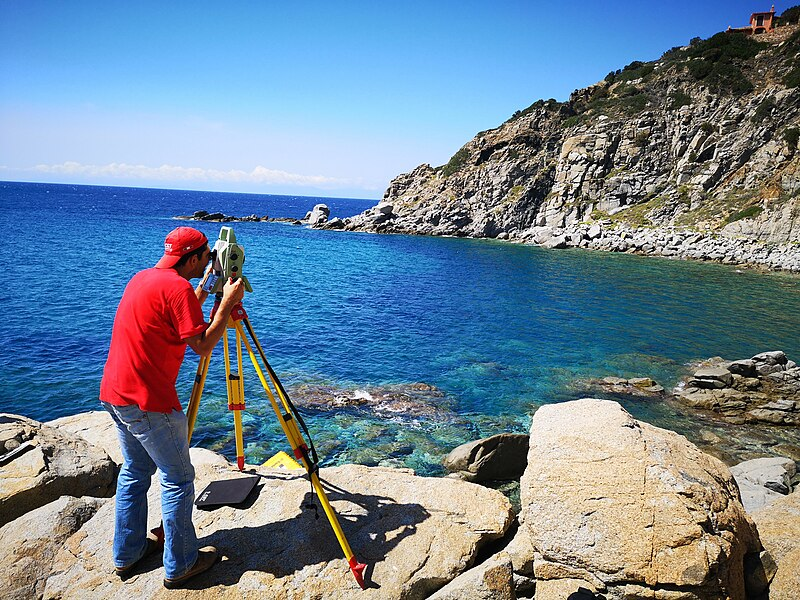

A Geographic Information System (GIS) is a computer system that analyzes and displays geographically referenced information. It uses data that is attached to a unique location
A geographic information system (GIS) consists of integrated computer hardware and software that store, manage, analyze, edit, output, and visualize geographic data.[1][2] Much of this often happens within a spatial database; however, this is not essential to meet the definition of a GIS.[1] In a broader sense, one may consider such a system also to include human users and support staff, procedures and workflows, the body of knowledge of relevant concepts and methods, and institutional organizations.
The uncounted plural, geographic information systems, also abbreviated GIS, is the most common term for the industry and profession concerned with these systems. The academic discipline that studies these systems and their underlying geographic principles, may also be abbreviated as GIS, but the unambiguous GIScience is more common.[3] GIScience is often considered a subdiscipline of geography within the branch of technical geography.
Geographic information systems are utilized in multiple technologies, processes, techniques and methods. They are attached to various operations and numerous applications, that relate to: engineering, planning, management, transport/logistics, insurance, telecommunications, and business,[4] as well as the natural sciences such as forestry, ecology, and Earth science. For this reason, GIS and location intelligence applications are at the foundation of location-enabled services, which rely on geographic analysis and visualization

What is geomatics?
A Geographic Information System (GIS) is a computer system that analyzes and displays geographically referenced information. It uses data that is attached to a unique location
RS

DOAA
GIS
DOAA
SURVAY
DOAA